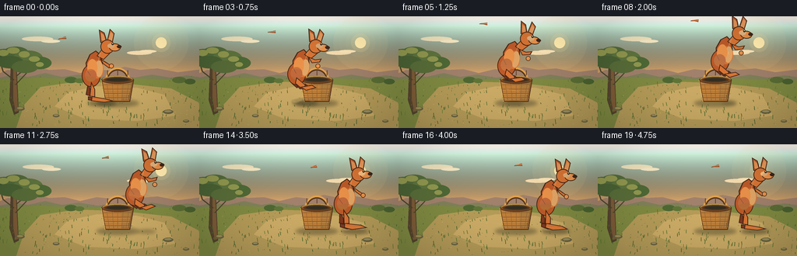
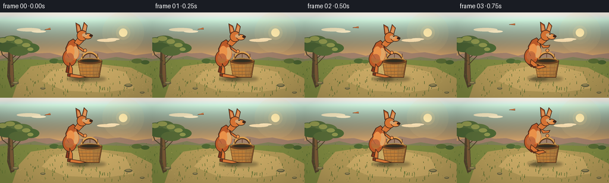
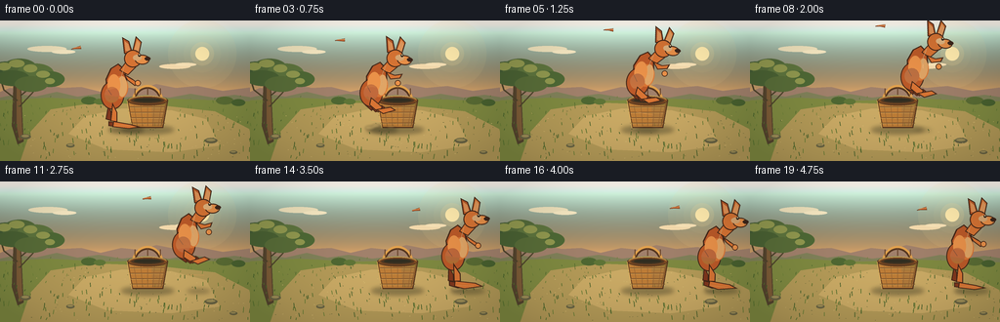
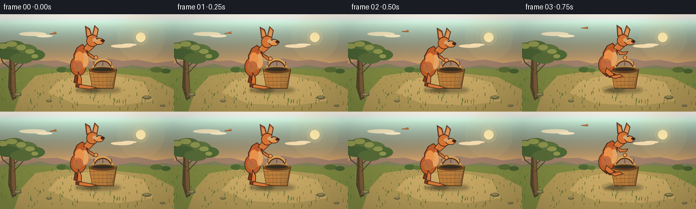

CODING AGENTS AS PIXEL WORLD MODELS
traex/DeepSeek-V4.1-Flash · dynamic_spatial_relationship_0033
点击播放 · 原生 RGB 像素
逐轮保存的候选
回放视频、检查图与代码变化。
每份候选均可单独播放。实际图片检查记录在下方工具轨迹中。
候选 01播放与检查图
点击播放 · 原生 RGB 像素


展开代码变化
--- 上一保存版本
+++ 本次保存版本
@@ -0,0 +1,538 @@
+from __future__ import annotations
+
+import math
+from pathlib import Path
+
+import numpy as np
+from PIL import Image, ImageDraw, ImageFilter
+
+from artifact_io import save
+
+
+WIDTH = 256
+HEIGHT = 144
+FRAMES = 20
+SCALE = 4
+GROUND_Y = 112.0
+
+
+def mix(a: tuple[int, int, int], b: tuple[int, int, int], t: float) -> tuple[int, int, int]:
+ return tuple(round(a[i] + (b[i] - a[i]) * t) for i in range(3))
+
+
+def rgba(color: tuple[int, int, int], alpha: int = 255) -> tuple[int, int, int, int]:
+ return (*color, alpha)
+
+
+def cubic_bezier(p0, p1, p2, p3, steps=28):
+ points = []
+ for i in range(steps + 1):
+ t = i / steps
+ u = 1.0 - t
+ x = u**3 * p0[0] + 3 * u**2 * t * p1[0] + 3 * u * t**2 * p2[0] + t**3 * p3[0]
+ y = u**3 * p0[1] + 3 * u**2 * t * p1[1] + 3 * u * t**2 * p2[1] + t**3 * p3[1]
+ points.append((x, y))
+ return points
+
+
+def tapered_curve(draw: ImageDraw.ImageDraw, spine, start_width, end_width, fill, outline, width=1.0):
+ """Draw a tapered organic ribbon around a sampled spine."""
+ if len(spine) < 2:
+ return
+ left, right = [], []
+ for i, point in enumerate(spine):
+ if i == 0:
+ dx = spine[1][0] - point[0]
+ dy = spine[1][1] - point[1]
+ elif i == len(spine) - 1:
+ dx = point[0] - spine[i - 1][0]
+ dy = point[1] - spine[i - 1][1]
+ else:
+ dx = spine[i + 1][0] - spine[i - 1][0]
+ dy = spine[i + 1][1] - spine[i - 1][1]
+ length = max(0.001, math.hypot(dx, dy))
+ nx, ny = -dy / length, dx / length
+ t = i / (len(spine) - 1)
+ half = (start_width + (end_width - start_width) * t) * 0.5
+ left.append((point[0] + nx * half, point[1] + ny * half))
+ right.append((point[0] - nx * half, point[1] - ny * half))
+ polygon = left + right[::-1]
+ draw.polygon(polygon, fill=fill, outline=outline, width=round(width))
+
+
+class Renderer:
+ def __init__(self):
+ self.w = WIDTH * SCALE
+ self.h = HEIGHT * SCALE
+ rng = np.random.default_rng(33)
+ self.grass_specs = []
+ for _ in range(190):
+ x = rng.uniform(0, WIDTH)
+ y = rng.uniform(78, 142)
+ depth = (y - 78) / 64
+ length = rng.uniform(1.4, 4.2) * (0.55 + depth)
+ lean = rng.uniform(-1.2, 1.2)
+ shade = int(rng.integers(0, 3))
+ self.grass_specs.append((x, y, length, lean, shade))
+ self.stone_specs = [
+ (26, 119, 5.5, 2.6),
+ (72, 128, 4.2, 2.0),
+ (216, 123, 6.5, 2.7),
+ (239, 135, 4.0, 1.7),
+ ]
+
+ def xy(self, x, y):
+ return round(x * SCALE), round(y * SCALE)
+
+ def box(self, x0, y0, x1, y1):
+ return round(x0 * SCALE), round(y0 * SCALE), round(x1 * SCALE), round(y1 * SCALE)
+
+ def ellipse(self, draw, box, fill, outline=None, width=0):
+ draw.ellipse(self.box(*box), fill=fill, outline=outline, width=round(width * SCALE))
+
+ def polygon(self, draw, points, fill, outline=None, width=0):
+ draw.polygon([self.xy(x, y) for x, y in points], fill=fill, outline=outline, width=round(width * SCALE))
+
+ def line(self, draw, points, fill, width=1.0):
+ draw.line([self.xy(x, y) for x, y in points], fill=fill, width=round(width * SCALE), joint="curve")
+
+ def background(self, frame: int) -> Image.Image:
+ y = np.linspace(0.0, 1.0, self.h, dtype=np.float32)
+ top = np.array([91, 145, 164], dtype=np.float32)
+ mid = np.array([187, 184, 143], dtype=np.float32)
+ low = np.array([226, 171, 111], dtype=np.float32)
+ field = np.array([149, 145, 73], dtype=np.float32)
+
+ image = np.empty((self.h, self.w, 3), dtype=np.uint8)
+ horizon = 77.0 / HEIGHT
+ for row in range(self.h):
+ yn = row / (self.h - 1)
+ if yn < horizon:
+ t = yn / horizon
+ color = top * (1 - t) + mid * (1 - t) ** 2 + low * t**2
+ color /= max(1.0, (1 - t) ** 2 + t**2)
+ else:
+ t = (yn - horizon) / (1 - horizon)
+ color = mix(tuple(low.astype(int)), tuple(field.astype(int)), min(1.0, t * 1.6))
+ image[row, :, :] = np.clip(color, 0, 255).astype(np.uint8)
+
+ base = Image.fromarray(image, "RGB").convert("RGBA")
+ glow = Image.new("RGBA", base.size, (0, 0, 0, 0))
+ gd = ImageDraw.Draw(glow)
+ sx, sy = self.xy(207, 34)
+ for radius, alpha in [(35, 20), (27, 24), (19, 34), (12, 70)]:
+ r = radius * SCALE
+ gd.ellipse((sx - r, sy - r, sx + r, sy + r), fill=(255, 227, 159, alpha))
+ gd.ellipse((sx - 7 * SCALE, sy - 7 * SCALE, sx + 7 * SCALE, sy + 7 * SCALE), fill=(255, 239, 184, 255))
+ base = Image.alpha_composite(base, glow)
+
+ d = ImageDraw.Draw(base)
+ # Soft cloud bands.
+ for cx, cy, rx, ry, color in [
+ (48 + frame * 0.10, 29, 20, 3.1, (238, 229, 198, 95)),
+ (65 + frame * 0.10, 32, 12, 2.1, (245, 235, 205, 80)),
+ (179, 47, 16, 2.5, (242, 220, 181, 66)),
+ (190, 45, 11, 1.7, (246, 228, 191, 58)),
+ ]:
+ self.ellipse(d, (cx - rx, cy - ry, cx + rx, cy + ry), color)
+
+ # Layered distant ridges.
+ self.polygon(
+ d,
+ [(-5, 75), (10, 69), (28, 71), (45, 65), (63, 69), (83, 68), (103, 73),
+ (124, 68), (143, 70), (160, 65), (180, 69), (202, 67), (228, 72), (260, 68), (260, 84), (-5, 84)],
+ (157, 128, 111, 180),
+ )
+ self.polygon(
+ d,
+ [(-5, 80), (18, 75), (36, 78), (58, 73), (79, 78), (101, 75), (125, 79),
+ (149, 76), (173, 79), (195, 75), (219, 79), (240, 76), (260, 79), (260, 90), (-5, 90)],
+ (125, 128, 92, 220),
+ )
+
+ # Ground bands and a warm dusty path.
+ self.polygon(
+ d,
+ [(-8, 82), (50, 79), (110, 82), (173, 80), (264, 83), (264, 146), (-8, 146)],
+ (124, 137, 67),
+ )
+ self.polygon(
+ d,
+ [(52, 91), (99, 84), (157, 86), (220, 93), (255, 111), (263, 146), (20, 146), (31, 114)],
+ (176, 154, 91),
+ )
+ self.polygon(
+ d,
+ [(87, 98), (125, 90), (176, 92), (211, 101), (225, 128), (175, 135), (109, 132), (70, 116)],
+ (198, 170, 105, 155),
+ )
+
+ # Eucalyptus trunk and airy canopy at the left edge.
+ self.polygon(d, [(14, 58), (21, 59), (24, 124), (18, 127), (12, 108)], (83, 68, 47))
+ self.polygon(d, [(17, 62), (20, 61), (23, 122), (20, 123), (17, 107)], (122, 91, 57))
+ self.line(d, [(18, 82), (4, 71), (0, 58)], (75, 66, 44), 1.6)
+ self.line(d, [(20, 88), (35, 72), (44, 63)], (75, 66, 44), 1.5)
+ self.line(d, [(21, 77), (38, 63), (52, 57)], (75, 66, 44), 1.4)
+ for cx, cy, rx, ry, color in [
+ (6, 51, 16, 9, (67, 92, 55)),
+ (20, 49, 18, 10, (82, 106, 60)),
+ (36, 54, 19, 10, (92, 116, 64)),
+ (51, 60, 15, 8, (76, 104, 55)),
+ (13, 59, 17, 8, (72, 97, 53)),
+ (32, 65, 17, 8, (86, 108, 58)),
+ ]:
+ self.ellipse(d, (cx - rx, cy - ry, cx + rx, cy + ry), (*color, 220))
+ for cx, cy, rx, ry in [
+ (4, 47, 7, 4), (17, 44, 8, 4), (31, 49, 7, 4), (44, 55, 7, 3.5), (51, 62, 5, 3)
+ ]:
+ self.ellipse(d, (cx - rx, cy - ry, cx + rx, cy + ry), (142, 152, 82, 150))
+
+ # A few shrubs break up the horizon.
+ for cx, cy, rx, ry, color in [
+ (91, 82, 8, 4, (77, 103, 52)),
+ (102, 83, 6, 3, (92, 116, 57)),
+ (230, 82, 9, 4, (88, 108, 54)),
+ (244, 84, 7, 3.5, (71, 97, 49)),
+ ]:
+ self.ellipse(d, (cx - rx, cy - ry, cx + rx, cy + ry), color)
+
+ # Grass is kept crisp but irregular, with subtle wind motion.
+ sway = math.sin(frame * 0.72) * 0.35
+ shades = [(66, 95, 43), (84, 112, 48), (103, 126, 57)]
+ for x, y, length, lean, shade in self.grass_specs:
+ depth = (y - 78) / 64
+ wind = sway * (0.3 + depth)
+ self.line(
+ d,
+ [(x, y), (x + lean * 0.55 + wind, y - length)],
+ (*shades[shade], 220),
+ max(0.35, 0.55 + depth * 0.25),
+ )
+
+ for x, y, rx, ry in self.stone_specs:
+ self.ellipse(d, (x - rx, y - ry, x + rx, y + ry), (103, 100, 70, 230))
+ self.ellipse(d, (x - rx * 0.72, y - ry * 0.75, x + rx * 0.65, y + ry * 0.15), (156, 143, 91, 190))
+
+ # Fine soil flecks.
+ rng = np.random.default_rng(904 + frame)
+ for _ in range(95):
+ x = rng.uniform(24, 251)
+ y = rng.uniform(92, 142)
+ length = rng.uniform(0.3, 1.1)
+ color = (99, 103, 62, 95) if rng.random() < 0.55 else (215, 190, 122, 70)
+ self.line(d, [(x, y), (x + length, y + rng.uniform(-0.2, 0.2))], color, 0.38)
+
+ return base
+
+ def shadow(self, image: Image.Image, x: float, y: float, rx: float, ry: float, alpha: int):
+ overlay = Image.new("RGBA", image.size, (0, 0, 0, 0))
+ d = ImageDraw.Draw(overlay)
+ self.ellipse(d, (x - rx, y - ry, x + rx, y + ry), (38, 42, 28, alpha))
+ overlay = overlay.filter(ImageFilter.GaussianBlur(2.2 * SCALE))
+ return Image.alpha_composite(image, overlay)
+
+ def basket(self, image: Image.Image) -> Image.Image:
+ image = self.shadow(image, 151, 112, 27, 4.2, 70)
+ layer = Image.new("RGBA", image.size, (0, 0, 0, 0))
+ d = ImageDraw.Draw(layer)
+ cx, base = 151, 111
+ outline = (84, 54, 32, 255)
+ dark = (125, 75, 36, 255)
+ straw = (185, 124, 57, 255)
+ light = (220, 161, 81, 255)
+
+ # Handle sits behind the basket body.
+ d.arc(
+ self.box(cx - 16, 66, cx + 16, 100),
+ 180,
+ 360,
+ fill=outline,
+ width=round(4.1 * SCALE),
+ )
+ d.arc(
+ self.box(cx - 16, 66, cx + 16, 100),
+ 180,
+ 360,
+ fill=light,
+ width=round(2.2 * SCALE),
+ )
+
+ # Woven, gently tapered body.
+ self.polygon(
+ d,
+ [(cx - 21, 82), (cx + 21, 82), (cx + 16, 110), (cx - 16, 110)],
+ straw,
+ outline,
+ 1.2,
+ )
+ self.polygon(
+ d,
+ [(cx + 4, 84), (cx + 18, 84), (cx + 14, 108), (cx + 5, 108)],
+ (160, 101, 44, 155),
+ )
+ self.ellipse(d, (cx - 21, 77, cx + 21, 87), dark, outline, 1.15)
+ self.ellipse(d, (cx - 17, 79, cx + 17, 85), (79, 55, 34), None)
+ self.ellipse(d, (cx - 14, 79.6, cx + 14, 83.5), (48, 45, 33), None)
+
+ # Horizontal weave plus short diagonal bindings.
+ for offset in (88.5, 94, 99.5, 105):
+ bend = (offset - 88) * 0.08
+ self.line(
+ d,
+ [(cx - 19 + bend, offset), (cx + 19 - bend, offset)],
+ (108, 65, 33, 210),
+ 0.65,
+ )
+ self.line(
+ d,
+ [(cx - 18 + bend, offset + 0.5), (cx + 17 - bend, offset + 0.5)],
+ (225, 169, 88, 135),
+ 0.42,
+ )
+ for x in range(-14, 16, 7):
+ self.line(d, [(cx + x, 87), (cx + x * 0.76, 108)], (119, 70, 34, 160), 0.62)
+ self.line(d, [(cx - 21, 82), (cx - 16, 110)], (238, 184, 96, 180), 0.8)
+ self.line(d, [(cx + 19, 83), (cx + 14, 108)], (103, 61, 31, 180), 0.72)
+
+ # Rim highlights and handle binding.
+ d.arc(self.box(cx - 20, 77, cx + 20, 87), 190, 350, fill=(239, 188, 98, 210), width=round(0.8 * SCALE))
+ for x in (cx - 13, cx, cx + 13):
+ self.line(d, [(x, 68.5 + abs(x - cx) * 0.08), (x, 76)], (92, 58, 34, 220), 0.9)
+ return Image.alpha_composite(image, layer)
+
+ def kangaroo_sprite(self, crouch: float, leg_mode: str, tail_lift: float) -> Image.Image:
+ logical_w, logical_h = 120, 112
+ sprite = Image.new("RGBA", (logical_w * SCALE, logical_h * SCALE), (0, 0, 0, 0))
+ d = ImageDraw.Draw(sprite)
+ anchor_x, anchor_y = 58.0, 100.0
+ body_drop = crouch * 4.5
+
+ outline = (67, 39, 25, 255)
+ deep = (126, 55, 31, 255)
+ fur = (183, 89, 42, 255)
+ warm = (211, 116, 54, 255)
+ highlight = (229, 145, 76, 255)
+ belly = (219, 164, 105, 255)
+
+ # Tail: broad at the hip, sweeping to a fine point.
+ tail_start = (43, 62 + body_drop)
+ tail_control = (23, 66 + body_drop - tail_lift)
+ tail_end = (4, 73 + body_drop * 0.5 - tail_lift * 1.5)
+ tail_spine = cubic_bezier(
+ tail_start,
+ (33, 66 + body_drop - tail_lift),
+ tail_control,
+ tail_end,
+ 32,
+ )
+ tapered_curve(d, tail_spine, 12.5, 2.0, fur, outline, 1.05)
+ highlight_spine = [(x, y - 2.2) for x, y in tail_spine[:-5]]
+ tapered_curve(d, highlight_spine, 4.2, 1.1, (223, 125, 61, 210), None, 0)
+
+ # Far leg is darker and slightly behind the body.
+ if leg_mode == "tuck":
+ far_leg = [(39, 72 + body_drop), (49, 78 + body_drop), (45, 83 + body_drop), (38, 78 + body_drop)]
+ far_foot = [(44, 80 + body_drop), (55, 76 + body_drop), (61, 80 + body_drop), (49, 84 + body_drop)]
+ elif leg_mode == "land":
+ far_leg = [(38, 73 + body_drop), (43, 83 + body_drop), (43, 91), (37, 90)]
+ far_foot = [(38, 90), (59, 94), (67, 97), (47, 98), (38, 95)]
+ else:
+ far_leg = [(39, 73 + body_drop), (42, 82 + body_drop), (42, 91), (36, 89)]
+ far_foot = [(39, 91), (55, 94), (65, 96), (55, 98), (39, 96)]
+ self.polygon(d, far_leg, deep, outline, 0.9)
+ self.polygon(d, far_foot, deep, outline, 0.95)
+
+ # Torso and large haunch.
+ torso = [
+ (37, 61 + body_drop),
+ (36, 48 + body_drop),
+ (41, 37 + body_drop),
+ (49, 32 + body_drop),
+ (56, 38 + body_drop),
+ (58, 51 + body_drop),
+ (53, 67 + body_drop),
+ (45, 73 + body_drop),
+ ]
+ self.polygon(d, torso, fur, outline, 1.15)
+ self.ellipse(d, (31, 50 + body_drop, 55, 79 + body_drop), fur, outline, 1.1)
+ self.ellipse(d, (42, 45 + body_drop, 59, 68 + body_drop), warm)
+ self.ellipse(d, (48, 45 + body_drop, 58, 66 + body_drop), belly)
+ self.ellipse(d, (38, 43 + body_drop, 51, 65 + body_drop), highlight, None)
+ self.ellipse(d, (35, 56 + body_drop, 50, 72 + body_drop), (198, 98, 46, 175), None)
+
+ # Near hind leg.
+ if leg_mode == "tuck":
+ near_leg = [(43, 69 + body_drop), (56, 78 + body_drop), (52, 84 + body_drop), (42, 77 + body_drop)]
+ near_foot = [(49, 81 + body_drop), (64, 77 + body_drop), (70, 80 + body_drop), (57, 85 + body_drop)]
+ elif leg_mode == "land":
+ near_leg = [(43, 71 + body_drop), (50, 83), (50, 91), (43, 91)]
+ near_foot = [(44, 90), (65, 93), (73, 97), (53, 99), (43, 96)]
+ else:
+ near_leg = [(43, 72 + body_drop), (48, 82), (48, 92), (41, 91)]
+ near_foot = [(44, 91), (61, 94), (72, 97), (60, 99), (43, 97)]
+ self.polygon(d, near_leg, warm, outline, 0.95)
+ self.polygon(d, near_foot, warm, outline, 1.0)
+ self.line(d, [(46, 95), (63, 96)], (237, 164, 97, 175), 0.55)
+
+ # Neck and head.
+ neck = [
+ (50, 39 + body_drop),
+ (56, 31 + body_drop),
+ (65, 29 + body_drop),
+ (67, 36 + body_drop),
+ (59, 44 + body_drop),
+ ]
+ self.polygon(d, neck, warm, outline, 1.0)
+
+ # Ears, with warm inner surfaces.
+ ear_shift = -1.2 * crouch
+ self.polygon(
+ d,
+ [(55, 22 + body_drop), (53 + ear_shift, 5 + body_drop), (60, 9 + body_drop), (64, 22 + body_drop)],
+ fur,
+ outline,
+ 1.0,
+ )
+ self.polygon(
+ d,
+ [(56.5, 19 + body_drop), (55.5 + ear_shift, 9 + body_drop), (59.2, 12 + body_drop), (61.5, 20 + body_drop)],
+ (226, 143, 82, 235),
+ )
+ self.polygon(
+ d,
+ [(63, 21 + body_drop), (67 + ear_shift * 0.5, 4 + body_drop), (73, 10 + body_drop), (70, 24 + body_drop)],
+ warm,
+ outline,
+ 1.0,
+ )
+ self.polygon(
+ d,
+ [(65, 19 + body_drop), (68.5, 8 + body_drop), (71.5, 12 + body_drop), (69.5, 21 + body_drop)],
+ (230, 150, 88, 230),
+ )
+
+ self.ellipse(d, (55, 18 + body_drop, 73, 36 + body_drop), warm, outline, 1.05)
+ self.ellipse(d, (66, 23 + body_drop, 81, 33 + body_drop), highlight, outline, 0.9)
+ self.ellipse(d, (64, 23 + body_drop, 73, 29 + body_drop), (238, 170, 110, 180), None)
+
+ # Muzzle, nose, eye and brow.
+ self.ellipse(d, (76, 25 + body_drop, 82, 29 + body_drop), (60, 38, 28, 255), None)
+ self.ellipse(d, (69.2, 22 + body_drop, 72.1, 25 + body_drop), (48, 35, 26, 255), None)
+ self.ellipse(d, (70.0, 22.2 + body_drop, 71.2, 23.5 + body_drop), (251, 231, 182, 240), None)
+ self.line(d, [(67, 20.4 + body_drop), (70.5, 19.8 + body_drop)], (92, 52, 31, 220), 0.48)
+ self.line(d, [(78, 30 + body_drop), (80, 30.3 + body_drop)], (102, 54, 30, 210), 0.42)
+
+ # Near arm: reaches forward during takeoff and stays close when standing.
+ if leg_mode == "tuck":
+ arm = [(55, 41 + body_drop), (65, 44 + body_drop), (73, 42 + body_drop), (71, 47 + body_drop), (61, 49 + body_drop)]
+ elif leg_mode == "land":
+ arm = [(55, 42 + body_drop), (65, 50), (71, 54), (68, 57), (59, 50)]
+ else:
+ arm = [(54, 42 + body_drop), (64, 48 + body_drop), (69, 52 + body_drop), (66, 55 + body_drop), (58, 49 + body_drop)]
+ self.polygon(d, arm, warm, outline, 0.9)
+ self.ellipse(d, (66, 49 + body_drop if leg_mode != "land" else 52, 72, 55 + body_drop if leg_mode != "land" else 58),
+ highlight, outline, 0.75)
+
+ # Chest fur and final small contour accents.
+ self.line(d, [(55, 35 + body_drop), (52, 45 + body_drop), (53, 55 + body_drop)],
+ (238, 174, 115, 130), 0.55)
+ self.line(d, [(38, 58 + body_drop), (42, 64 + body_drop)],
+ (109, 48, 28, 130), 0.48)
+
+ return sprite
+
+ def kangaroo(self, image: Image.Image, x: float, jump_height: float, crouch: float,
+ leg_mode: str, angle: float, frame: int) -> Image.Image:
+ shadow_scale = max(0.48, 1.0 - jump_height / 35)
+ image = self.shadow(
+ image,
+ x - 1.0,
+ GROUND_Y + 0.2,
+ 18.0 * shadow_scale,
+ 3.1 * shadow_scale,
+ round(92 * shadow_scale),
+ )
+
+ # Dust at takeoff and landing.
+ dust_strength = 0.0
+ if 1 <= frame <= 5:
+ dust_strength = 1.0 - abs(frame - 3) / 3
+ elif 13 <= frame <= 17:
+ dust_strength = 1.0 - abs(frame - 15) / 3
+ if dust_strength > 0:
+ overlay = Image.new("RGBA", image.size, (0, 0, 0, 0))
+ d = ImageDraw.Draw(overlay)
+ for i, (dx, dy, rx, ry) in enumerate([(-13, -2, 5, 2.1), (-7, -4, 4, 1.7), (8, -3, 4.5, 1.8)]):
+ self.ellipse(
+ d,
+ (x + dx - rx, GROUND_Y + dy - ry, x + dx + rx, GROUND_Y + dy + ry),
+ (210, 183, 119, round(58 * dust_strength)),
+ )
+ overlay = overlay.filter(ImageFilter.GaussianBlur(1.1 * SCALE))
+ image = Image.alpha_composite(image, overlay)
+
+ sprite = self.kangaroo_sprite(crouch, leg_mode, tail_lift=2.0 + jump_height * 0.13)
+ if abs(angle) > 0.01:
+ sprite = sprite.rotate(
+ angle,
+ resample=Image.Resampling.BICUBIC,
+ center=(58 * SCALE, 100 * SCALE),
+ )
+ paste_x = round((x - 58) * SCALE)
+ paste_y = round((GROUND_Y - jump_height - 100) * SCALE)
+ image.alpha_composite(sprite, (paste_x, paste_y))
+ return image
+
+ def render(self, frame: int) -> Image.Image:
+ image = self.background(frame)
+
+ # Keyframed jump trajectory. The body is fully at rest before and after.
+ heights = [0, 0, 0.7, 4, 8, 12, 15, 17, 18, 17, 15, 12, 8, 4, 1, 0, 0, 0, 0, 0]
+ xs = [132, 132, 133, 137, 143, 149, 155, 162, 169, 176, 183, 189, 194, 198, 201, 203, 203, 202.7, 203, 203]
+ crouches = [0, 0.35, 0.82, 0.62, 0.18, 0.04, 0, 0, 0, 0, 0, 0, 0, 0, 0.18, 0.72, 0.34, 0.08, 0, 0]
+ angles = [0, -1, -3.5, -5.5, -7, -8, -8, -7, -5, -3, -1, 1.5, 3, 4, 2, -1, -2, -1, 0, 0]
+ if frame <= 2:
+ leg_mode = "stand"
+ elif frame <= 13:
+ leg_mode = "tuck"
+ elif frame <= 16:
+ leg_mode = "land"
+ else:
+ leg_mode = "stand"
+
+ # Basket is composited first so the starting pose visibly overlaps it.
+ image = self.basket(image)
+ image = self.kangaroo(
+ image,
+ xs[frame],
+ heights[frame],
+ crouches[frame],
+ leg_mode,
+ angles[frame],
+ frame,
+ )
+
+ # Gentle warm grade, restrained vignette, and a touch of ordered dither.
+ arr = np.asarray(image.convert("RGB"), dtype=np.float32) / 255.0
+ yy, xx = np.mgrid[0 : image.height, 0 : image.width]
+ nx = (xx / image.width - 0.5) * 2
+ ny = (yy / image.height - 0.5) * 2
+ vignette = np.clip(1.0 - 0.10 * (nx * nx + ny * ny), 0.84, 1.0)
+ arr[..., 0] = np.clip(arr[..., 0] * 1.025 * vignette, 0, 1)
+ arr[..., 1] = np.clip(arr[..., 1] * 1.005 * vignette, 0, 1)
+ arr[..., 2] = np.clip(arr[..., 2] * 0.965 * vignette, 0, 1)
+ out = Image.fromarray(np.round(arr * 255).astype(np.uint8), "RGB")
+ out = out.resize((WIDTH, HEIGHT), Image.Resampling.LANCZOS)
+ return out
+
+
+def main():
+ case_dir = Path(__file__).resolve().parent
+ renderer = Renderer()
+ frames = [np.asarray(renderer.render(i), dtype=np.uint8) for i in range(FRAMES)]
+ save(frames, case_dir)
+ print(f"saved {len(frames)} frames to {case_dir}")
+
+
+if __name__ == "__main__":
+ main()
候选 02播放与检查图
点击播放 · 原生 RGB 像素

展开代码变化
--- 上一保存版本
+++ 本次保存版本
@@ -488,7 +488,7 @@
# Keyframed jump trajectory. The body is fully at rest before and after.
heights = [0, 0, 0.7, 4, 8, 12, 15, 17, 18, 17, 15, 12, 8, 4, 1, 0, 0, 0, 0, 0]
- xs = [132, 132, 133, 137, 143, 149, 155, 162, 169, 176, 183, 189, 194, 198, 201, 203, 203, 202.7, 203, 203]
+ xs = [130, 130, 131, 136, 143, 151, 160, 169, 178, 187, 196, 204, 212, 219, 224, 227, 228, 228, 228, 228]
crouches = [0, 0.35, 0.82, 0.62, 0.18, 0.04, 0, 0, 0, 0, 0, 0, 0, 0, 0.18, 0.72, 0.34, 0.08, 0, 0]
angles = [0, -1, -3.5, -5.5, -7, -8, -8, -7, -5, -3, -1, 1.5, 3, 4, 2, -1, -2, -1, 0, 0]
if frame <= 2:
候选 03播放与检查图
点击播放 · 原生 RGB 像素


展开代码变化
--- 上一保存版本
+++ 本次保存版本
@@ -116,7 +116,7 @@
color = mix(tuple(low.astype(int)), tuple(field.astype(int)), min(1.0, t * 1.6))
image[row, :, :] = np.clip(color, 0, 255).astype(np.uint8)
- base = Image.fromarray(image, "RGB").convert("RGBA")
+ base = Image.fromarray(image).convert("RGBA")
glow = Image.new("RGBA", base.size, (0, 0, 0, 0))
gd = ImageDraw.Draw(glow)
sx, sy = self.xy(207, 34)
@@ -521,7 +521,7 @@
arr[..., 0] = np.clip(arr[..., 0] * 1.025 * vignette, 0, 1)
arr[..., 1] = np.clip(arr[..., 1] * 1.005 * vignette, 0, 1)
arr[..., 2] = np.clip(arr[..., 2] * 0.965 * vignette, 0, 1)
- out = Image.fromarray(np.round(arr * 255).astype(np.uint8), "RGB")
+ out = Image.fromarray(np.round(arr * 255).astype(np.uint8))
out = out.resize((WIDTH, HEIGHT), Image.Resampling.LANCZOS)
return out
可观测工具轨迹
实际执行的命令与返回图片。
命令 1exit 0
/bin/bash -c "pwd && rg --files -g 'prompt.txt' -g 'GENERATION_RULES.md' -g 'task_spec.json' -g '"'!node_modules'"'"
命令 2exit 0
/bin/bash -c 'ls -la'
命令 3exit 0
/bin/bash -c 'cat prompt.txt'
命令 4exit 0
/bin/bash -c 'cat GENERATION_RULES.md'
命令 5exit 0
/bin/bash -c 'cat task_spec.json'
命令 6exit 0
/bin/bash -c "sed -n '1,240p' artifact_io.py && sed -n '1,240p' player_template.html"
命令 7exit 0
/bin/bash -c 'python generate.py'
命令 8exit 0
/bin/bash -c 'command -v chafa || command -v viu || command -v img2txt || true'
命令 9exit 0
/bin/bash -c "python - <<'PY'
from PIL import Image
from pathlib import Path
for name in ['inspection.png','transition_check.png']:
im=Image.open(name)
print(name, im.size, im.mode)
for i in [0,2,4,6,8,10,12,14,16,19]:
im=Image.open(f'frames/{i:02d}.png')
print(i, im.getbbox(), im.resize((1,1)).getpixel((0,0)))
PY"命令 10exit 0
/bin/bash -c 'du -h pixels.npz index.html inspection.png && ls frames | wc -l'
命令 11exit 0
/bin/bash -c "python - <<'PY'
from PIL import Image, ImageDraw
names=[0,2,4,6,8,10,12,14,16,19]
im=Image.open('frames/00.png')
sheet=Image.new('RGB',(256*2, (144+16)*5),(18,22,26))
d=ImageDraw.Draw(sheet)
for j,i in enumerate(names):
x=(j%2)*256; y=(j//2)*160
d.text((x+4,y+2),f'{i:02d}',fill='white')
sheet.paste(Image.open(f'frames/{i:02d}.png'),(x,y+16))
sheet.resize((1024,1600),Image.Resampling.NEAREST).save('.tmp/contact.png')
PY"命令 12exit 0
/bin/bash -c "python - <<'PY'
from PIL import Image
import numpy as np
for i in [0,2,4,6,8,10,12,14,16,19]:
a=np.asarray(Image.open(f'frames/{i:02d}.png')).astype(int)
r,g,b=a[:,:,0],a[:,:,1],a[:,:,2]
orange=(r>130)&(r>g*1.28)&(g>b*1.08)&(b<120)
basket=(r>70)&(r<225)&(g>40)&(g<170)&(r>g*1.25)&(g>b*1.35)&~orange
for label,m in [('orange',orange),('basket',basket)]:
ys,xs=np.where(m)
if len(xs): print(i,label,len(xs),(xs.min(),ys.min(),xs.max(),ys.max()),(round(xs.mean(),1),round(ys.mean(),1)))
print()
PY"命令 13exit 0
/bin/bash -c "python - <<'PY'
from PIL import Image
im=Image.open('frames/00.png')
# crop foreground: x80..236 y16..125, upscale to inspect locally
im.crop((80,14,238,126)).resize((790,560),Image.Resampling.NEAREST).save('.tmp/frame00_crop.png')
im=Image.open('frames/08.png')
im.crop((80,0,238,126)).resize((790,630),Image.Resampling.NEAREST).save('.tmp/frame08_crop.png')
PY"命令 14exit 0
/bin/bash -c "python - <<'PY'
from PIL import Image
import numpy as np
for i in [0,8,19]:
a=np.asarray(Image.open(f'frames/{i:02d}.png'))
# foreground crop excluding sky/tree, rows 50:112
c=a[45:112,90:230]
# generate sixel-ish ANSI truecolor? skip. print quantized classes blocks
small=np.asarray(Image.fromarray(c).resize((70,34),Image.Resampling.BOX))
# classify orange, basket tan, green, blue/gray, dark
chars=[]
for row in small:
s=''
for r,g,b in row:
if r>130 and r>g*1.25 and g>b*1.2: s+='K'
elif r>80 and r>g*1.2 and g>b*1.35 and r<210: s+='B'
elif g>r*0.9 and g>b*1.3: s+='.'
elif r<80 and g<80 and b<80: s+='#'
else: s+=' '
chars.append(s)
print('\\nFRAME',i)
print('\\n'.join(chars))
PY"命令 15exit 0
/bin/bash -c "python - <<'PY'
from PIL import Image
import numpy as np
# Local crop silhouette comparison: warm saturated pixels only, excluding background.
for i in [0,8,19]:
a=np.asarray(Image.open(f'frames/{i:02d}.png')).astype(float)
r,g,b=a[:,:,0],a[:,:,1],a[:,:,2]
m=(r>115)&(r-g>40)&(g-b>22)&(b<125)
ys,xs=np.where(m)
print(i, 'bbox', (xs.min(),ys.min(),xs.max(),ys.max()), 'n',len(xs))
# per-column counts in foreground band
counts=m[50:112].sum(axis=0)
print('x-runs >3:', [(s,e) for s,e in []])
# print row extents around kangaroo
for y in range(58,110,6):
xx=np.where(m[y])[0]
if len(xx): print(y,int(xx.min()),int(xx.max()),len(xx))
PY"命令 16exit 0
/bin/bash -c "python - <<'PY'
from PIL import Image
import numpy as np
for i in [0,1,2,3,4,8,12,15,16,19]:
a=np.asarray(Image.open(f'frames/{i:02d}.png')).astype(int)
# unique strong fur colors sampled from expected central body x 110..190 y45..105
r,g,b=a[:,:,0],a[:,:,1],a[:,:,2]
m=(r>140)&(r>g*1.32)&(g>b*1.15)&(b<120)
ys,xs=np.where(m)
# restrict central scene to avoid tree
keep=(xs>80)&(ys>10)&(ys<110)
xs=xs[keep];ys=ys[keep]
print(i, len(xs), (xs.min(),ys.min(),xs.max(),ys.max()) if len(xs) else None)
PY"命令 17exit 0
/bin/bash -c 'python -m py_compile generate.py && git status --short 2>/dev/null || true'
命令 18exit 0
/bin/bash -c 'python generate.py'
命令 19exit 0
/bin/bash -c "python - <<'PY'
from PIL import Image
import numpy as np, json
# Verify contract and approximate final separation using sprite-mask color extent.
for i in [0,8,19]:
a=np.asarray(Image.open(f'frames/{i:02d}.png')).astype(int)
r,g,b=a[:,:,0],a[:,:,1],a[:,:,2]
m=(r>140)&(r>g*1.32)&(g>b*1.15)&(b<120)
ys,xs=np.where(m)
keep=(xs>80)&(ys>10)&(ys<110)
print(i,'fur bbox',int(xs[keep].min()),int(ys[keep].min()),int(xs[keep].max()),int(ys[keep].max()))
spec=json.load(open('task_spec.json'))
p=np.load('pixels.npz')['pixels']
print('shape',p.shape,'dtype',p.dtype,'frames',len(list(__import__('pathlib').Path('frames').glob('*.png'))))
print('changed pixels first->last',int((p[:,:,0]"'!=p[:,:,-1]).sum()))
PY'命令 20exit 0
/bin/bash -c "python - <<'PY'
from PIL import Image
import numpy as np
for i in [0,8,19]:
a=np.asarray(Image.open(f'frames/{i:02d}.png')).astype(int)
# strong orange fur only, central area
r,g,b=a[:,:,0],a[:,:,1],a[:,:,2]
m=(r>150)&(r-g>50)&(g-b>24)&(b<115)
m[:10]=False;m[111:]=False;m[:,:70]=False
ys,xs=np.where(m)
print(i, (xs.min(),ys.min(),xs.max(),ys.max()), len(xs))
# report rightmost tail region x range at ground band
for y in [72,80,88,96,104]:
xx=np.where(m[y])[0]
print(' ',y, (int(xx.min()),int(xx.max())) if len(xx) else None)
PY"命令 21exit 0
/bin/bash -c "python - <<'PY'
from PIL import Image
# enlarged crops of final pose for a last silhouette check
im=Image.open('frames/19.png')
im.crop((95,8,256,122)).resize((966,684),Image.Resampling.NEAREST).save('.tmp/final_crop.png')
PY"命令 22exit 0
/bin/bash -c "python - <<'PY'
from PIL import Image
import numpy as np
# Measure motion, clipping, and frame-to-frame change as sanity checks.
arr=np.stack([np.asarray(Image.open(f'frames/{i:02d}.png')) for i in range(20)])
d=np.abs(arr[1:].astype(np.int16)-arr[:-1].astype(np.int16)).mean(axis=(1,2,3))
print('mean adjacent frame delta:', np.round(d,2).tolist())
print('all frames nonblank:', all(arr[i].std()>20 for i in range(20)))
print('unique colors final:', len(np.unique(arr[-1].reshape(-1,3),axis=0)))
PY"命令 23exit 0
/bin/bash -c "python - <<'PY'
from pathlib import Path
from PIL import Image
import json, numpy as np
required=['generate.py','frames','pixels.npz','index.html','inspection.png','transition_check.png']
for name in required:
p=Path(name)
print(name, 'OK' if p.exists() else 'MISSING', p.stat().st_size if p.exists() and p.is_file() else '')
im=Image.open('frames/00.png')
print('frame', im.size, im.mode)
html=Path('index.html').read_text()
print('player ready marker', '__pixelReady' in html, 'caption present', 'kangaroo' in html)
PY"命令 24exit 0
/bin/bash -c "python - <<'PY'
from PIL import Image
import numpy as np
for i in [0,3,8,13,16,19]:
a=np.asarray(Image.open(f'frames/{i:02d}.png')).astype(int)
# Basket center known ~151; orange strong silhouette centroid in central region.
r,g,b=a[:,:,0],a[:,:,1],a[:,:,2]
m=(r>150)&(r-g>50)&(g-b>24)&(b<115)
m[:8]=False;m[111:]=False;m[:,:75]=False
ys,xs=np.where(m)
print(i, 'mean',round(xs.mean(),1),round(ys.mean(),1),'bbox',xs.min(),ys.min(),xs.max(),ys.max())
PY"命令 25exit 0
/bin/bash -c 'python generate.py && python -m py_compile generate.py'
命令 26exit 0
/bin/bash -c "python - <<'PY'
from pathlib import Path
from PIL import Image
import numpy as np, json
frames=sorted(Path('frames').glob('*.png'))
assert len(frames)==20
for i,p in enumerate(frames):
im=Image.open(p)
assert im.size==(256,144) and im.mode=='RGB', (p,im.size,im.mode)
a=np.stack([np.asarray(Image.open(p)) for p in frames])
assert a.shape==(20,144,256,3)
p=np.load('pixels.npz')['pixels']
assert p.shape==(144,256,20)
assert (p[:,:,0] "'!= p[:,:,-1]).sum() > 5000
print('"'validated: 20 RGB frames, 256x144, pixels.npz aligned, motion present')
PY"保存候选 3 份；完成命令 26 次；可验证图片返回 0 张。原始 API 响应与完整日志保留在本地。